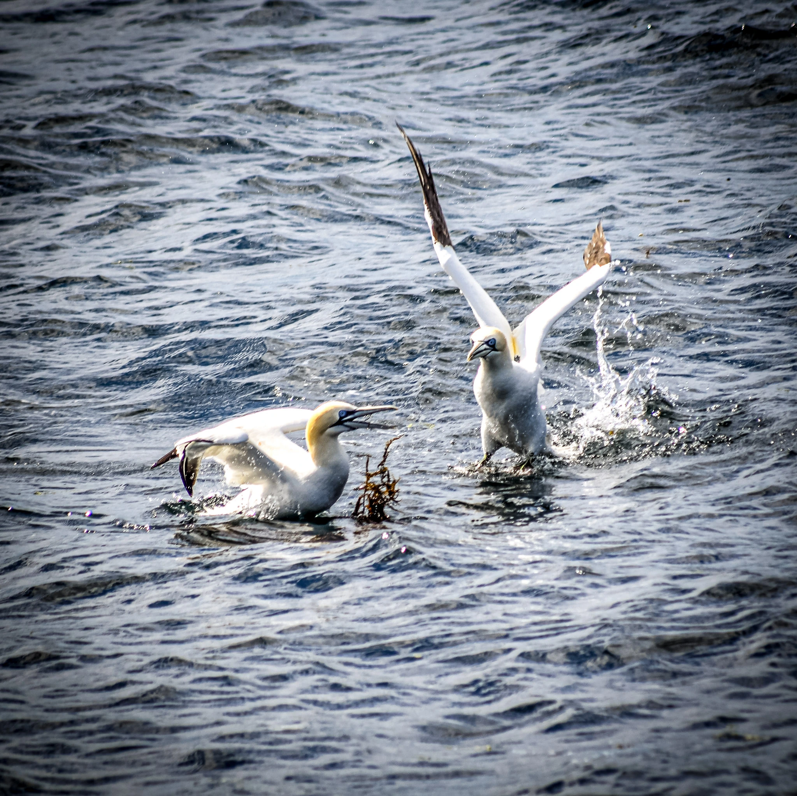
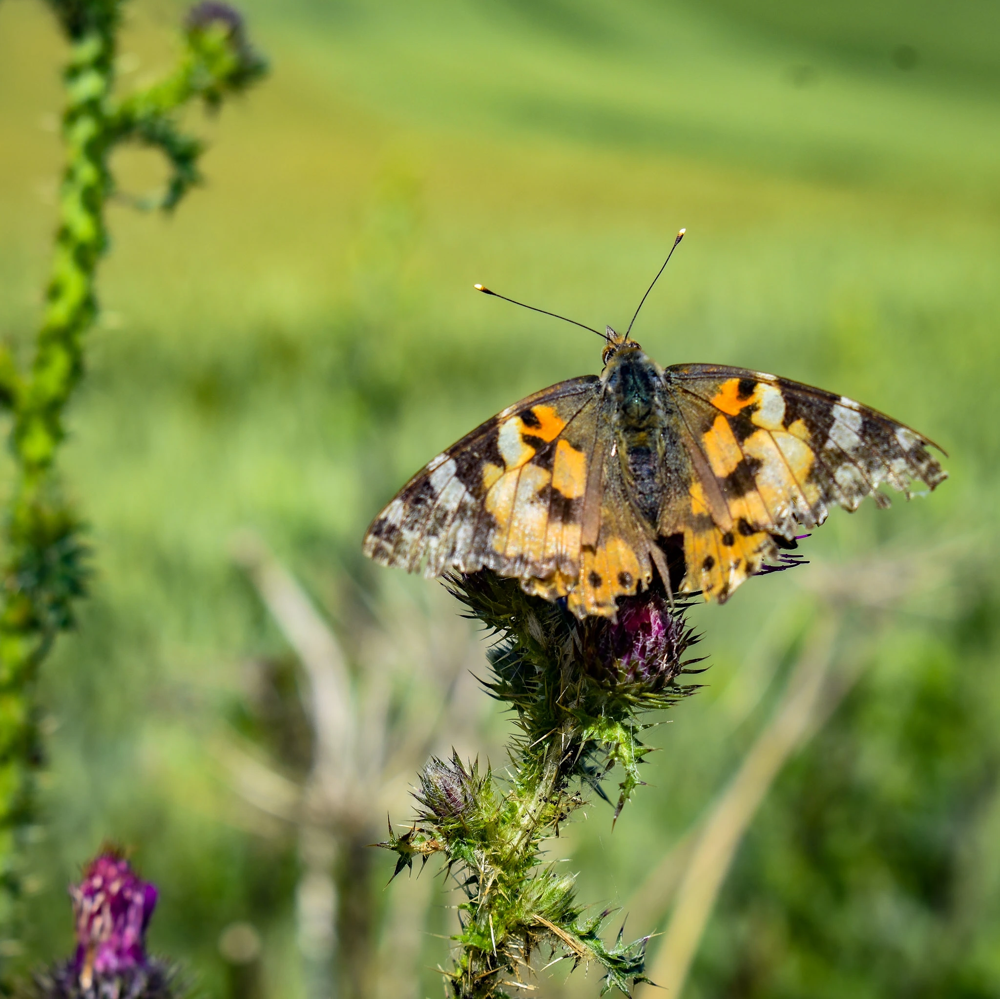
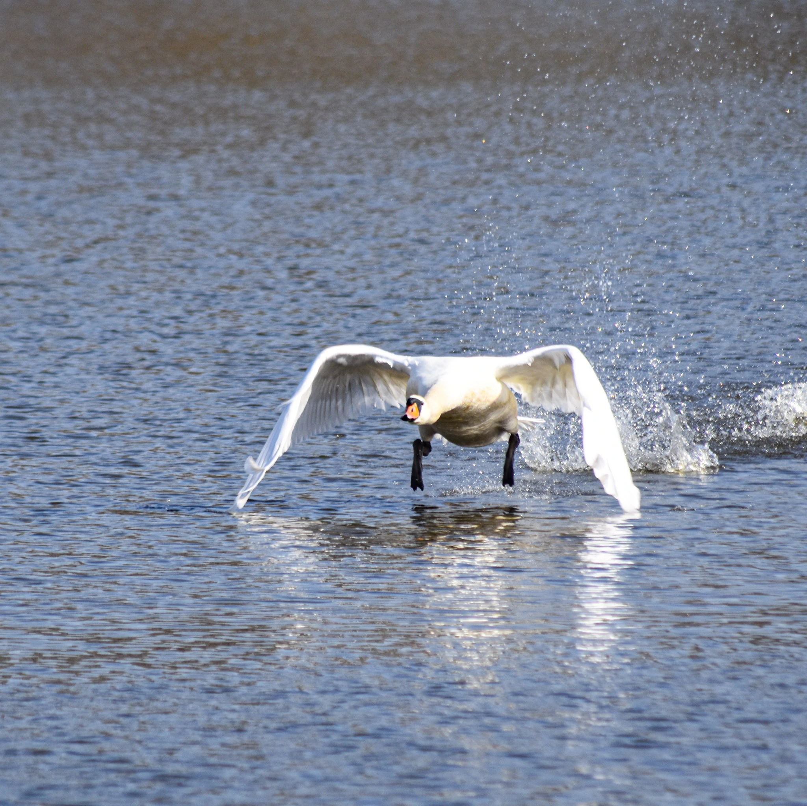
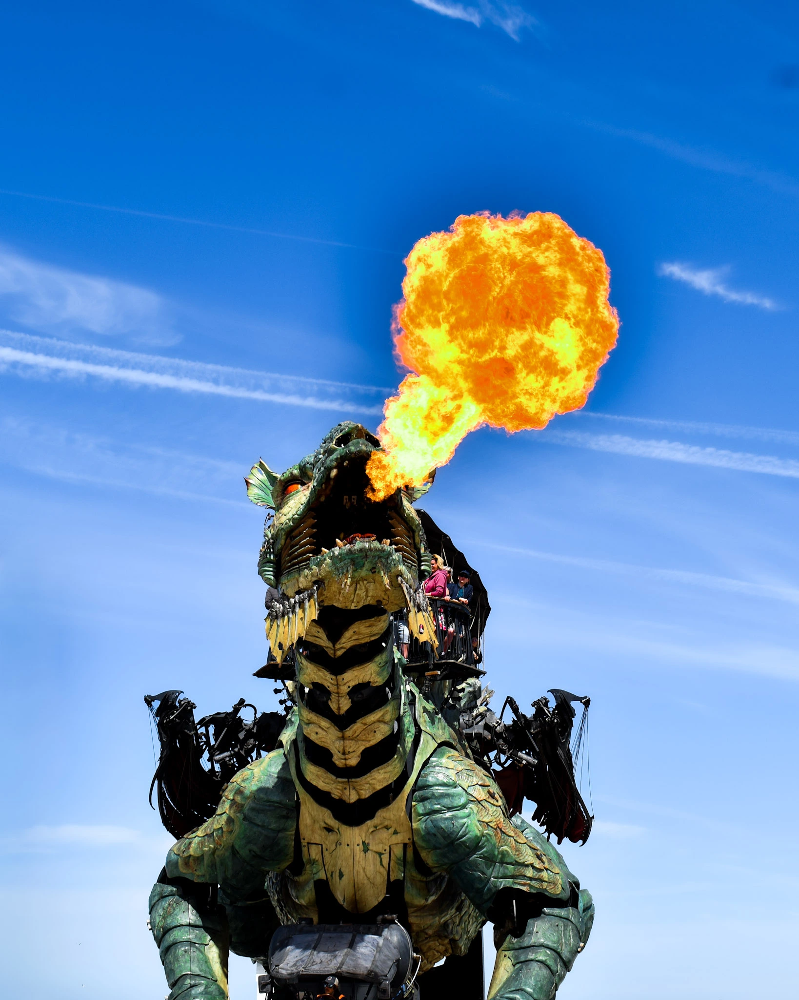
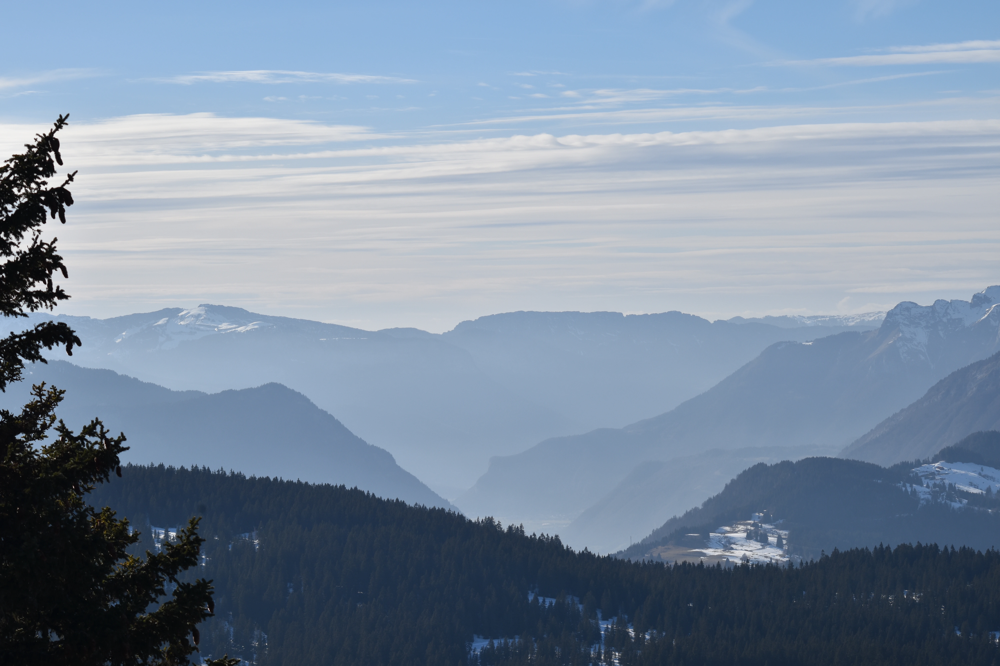

La nature en images
Chaque sortie est une nouvelle image






La ch'tite randonneuse · Hauts-de-France
Photographe, graphiste et randonneuse — je parcours les Hauts-de-France depuis 2 ans.
Mis à jour automatiquement après chaque randonnée
Une sélection de mes sentiers préférés avec traces GPX téléchargeables
Les falaises de craie face à l'Angleterre. Vue imprenable sur la Manche, faune marine exceptionnelle.
Les terrils du bassin minier vus de haut — patrimoine UNESCO et panorama sur le Pas-de-Calais.
Un sentier verdoyant le long de la Lawe — parfait pour la photo nature et l'observation des oiseaux.
La baie d'Authie et ses oiseaux migrateurs — un des plus beaux spots photo de la région.
Le sentier de la Pointe de la Crèche avec vue mer — une des mes sorties les plus récentes et préférées.
Une balade douce entre jardins et mémorial — idéale pour une sortie courte près de chez soi.
Chaque sortie est une nouvelle image





Tu veux collaborer ?
Photographe, graphiste et randonneuse — je crée des contenus visuels professionnels pour mettre en valeur ton territoire, ta marque outdoor ou ton produit.
Me contacter →